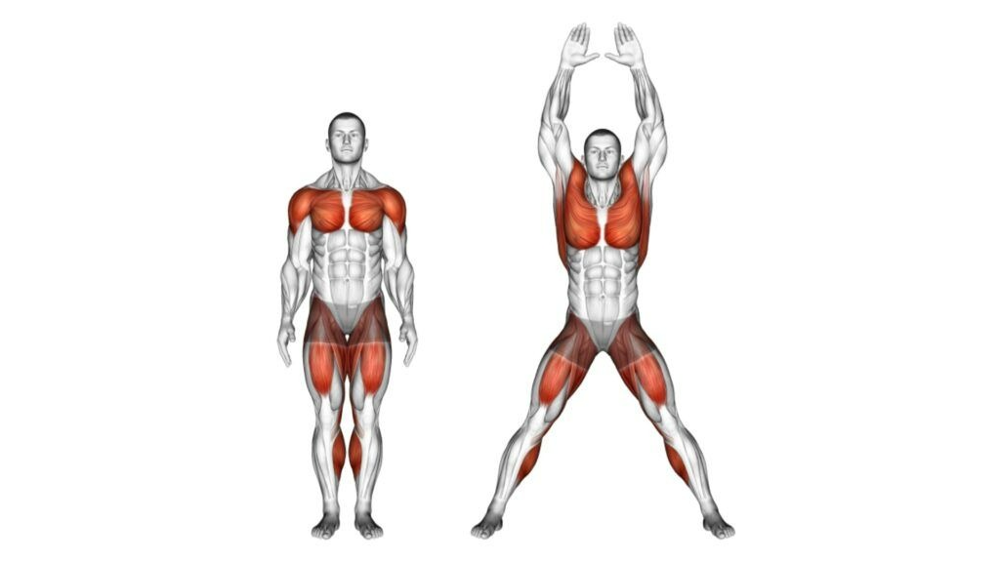
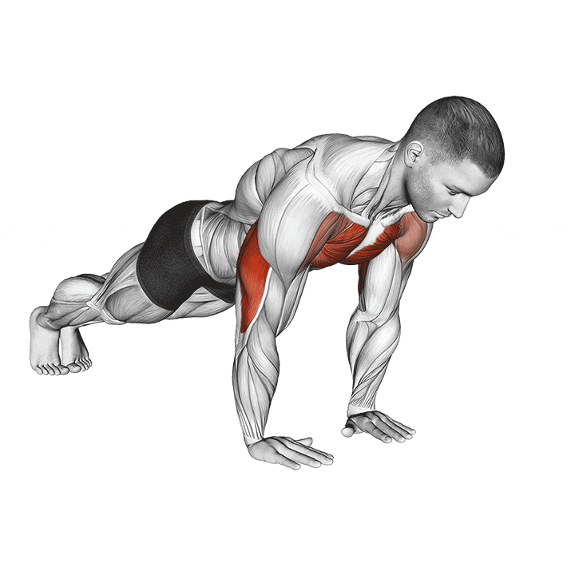
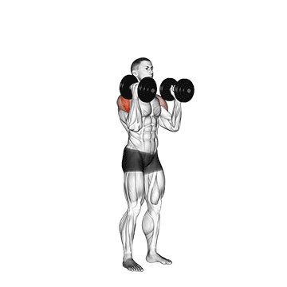
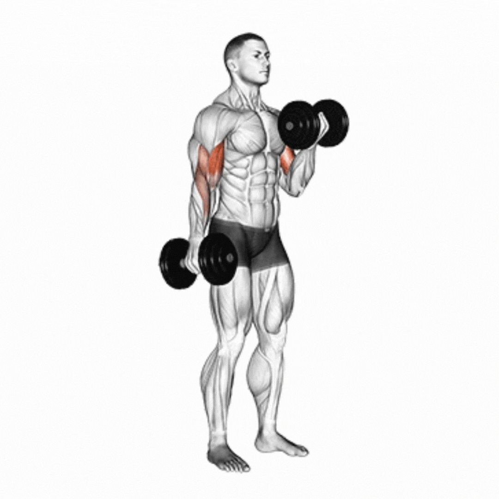
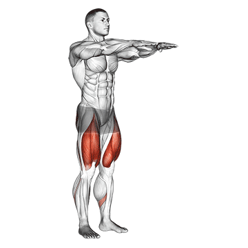
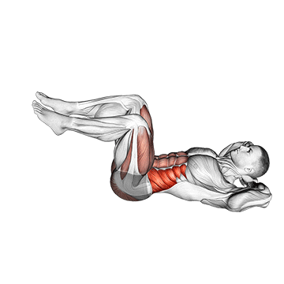

Polichinelo
Descrição:
- O polichinelo é um exercício aeróbico realizado em pé, com o movimento simultâneo de abertura e fechamento das pernas e elevação dos braços acima da cabeça. Ele estimula a coordenação motora, melhora a resistência cardiovascular e auxilia no aquecimento corporal antes de atividades mais intensas.
- Sugestão de execução: realizar 3 séries de 30 a 45 segundos, com intervalo de 20 segundos entre as séries.

Flexão de Braço
Descrição:
- A flexão de braço é executada em posição de prancha, com as mãos apoiadas no solo na largura dos ombros e o corpo alinhado dos ombros aos pés. O movimento consiste em flexionar os cotovelos até aproximar o peito do solo e retornar à posição inicial, fortalecendo principalmente o peitoral, tríceps e deltoides.
- Sugestão de execução: realizar 3 séries de 10 a 15 repetições, com intervalo de 45 segundos entre as séries.

Desenvolvimento de Ombros
Descrição:
- O desenvolvimento de ombros é feito em pé ou sentado, segurando pesos adaptados à altura dos ombros com as palmas voltadas para a frente. O movimento consiste em elevar os halteres acima da cabeça até a extensão completa dos braços, retornando lentamente à posição inicial. O exercício fortalece os músculos deltoides e tríceps.
- Sugestão de execução: realizar 3 séries de 12 repetições, com intervalo de 45 a 60 segundos entre as séries.

Tríceps Mergulho
Descrição:
- O mergulho para tríceps é realizado com as mãos apoiadas em um banco ou superfície firme, pernas estendidas à frente e calcanhares apoiados em alguma superfície elevada até a mesma altura das mãos. O movimento consiste em flexionar os cotovelos, descendo o corpo até formar um ângulo de 90 graus, e retornar à posição inicial. Ele fortalece o tríceps, ombros e peitoral.
- Sugestão de execução: realizar 3 séries de 12 a 15 repetições, com intervalo de 45 segundos entre as séries.

Remada Curvada
Descrição:
- A remada curvada com pesos adaptados é feita com o tronco inclinado levemente à frente, joelhos semiflexionados e um peso em cada mão. O movimento consiste em puxar os pesos em direção ao abdômen, mantendo os cotovelos próximos ao corpo, e depois retornar à posição inicial. O exercício trabalha os músculos das costas, bíceps e ombros.
- Sugestão de execução: realizar 3 séries de 10 a 12 repetições, com intervalo de 60 segundos entre as séries.

Rosca Alternada
Descrição:
- A rosca alternada é executada em pé, com um peso adptado em cada mão e os braços estendidos ao lado do corpo. O movimento é realizado de forma alternada, flexionando um cotovelo por vez até elevar o peso à altura do ombro, contraindo o bíceps. O exercício desenvolve força e definição nos músculos dos braços.
- Sugestão de execução: realizar 3 séries de 12 repetições por braço, com intervalo de 45 segundos entre as séries.

Agachamento Livre
Descrição:
- O agachamento livre é realizado em pé, com os pés paralelos à largura dos ombros e o tronco ereto. O movimento consiste em flexionar os joelhos e quadris até que as coxas fiquem próximas à linha paralela ao solo, retornando em seguida à posição inicial. Esse exercício fortalece os músculos dos membros inferiores e melhora a estabilidade do core.
- Sugestão de execução: realizar 3 séries de 15 a 20 repetições, com intervalo de 45 segundos entre as séries.

Abdominal Bicicleta
Descrição:
- O abdominal bicicleta consiste em deitar-se em decúbito dorsal, com as mãos posicionadas atrás da cabeça e as pernas elevadas e flexionadas a 90 graus. O movimento é realizado de forma alternada, aproximando o cotovelo direito do joelho esquerdo e o cotovelo esquerdo do joelho direito, simulando o pedalar de uma bicicleta. O exercício promove o fortalecimento do reto abdominal e dos músculos oblíquos, contribuindo para a estabilidade e definição da região do core.
- Sugestão de execução: realizar 3 séries de 15 a 20 repetições por lado, com intervalo de 30 a 45 segundos entre as séries.